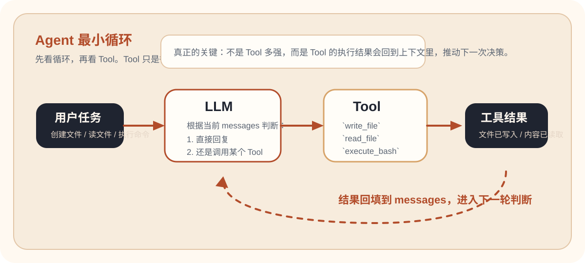

1 小时技术分享讲义
01. 底层原理，只有 100 行
先别谈框架，把 Agent 最小闭环直接跑出来：模型决定工具，代码执行工具，结果继续喂回模型。
这页按“先看代码，再看演示，最后自己试一轮”的顺序编排，适合技术分享科普场景。
工具调用Agent Loop最小实现
Code First
先看关键代码
先抓住决定行为的那段实现，再去看终端结果，会更容易把 Agent 的工作方式讲清楚。

先看最小 Agent 循环
先抓住这 20 多行：请求模型、拿到 tool call、执行工具、把结果回填，然后进入下一轮。
73 def run_agent(user_message, max_iterations=5):
74 messages = [
75 {"role": "system", "content": "You are a helpful assistant. Be concise."},
76 {"role": "user", "content": user_message},
77 ]
78 for _ in range(max_iterations):
79 response = client.chat.completions.create(
80 model=os.environ.get("OPENAI_MODEL", "gpt-4o-mini"),
81 messages=messages,
82 tools=tools,
83 )
84 message = response.choices[0].message
85 messages.append(message)
86 if not message.tool_calls:
87 return message.content
88 for tool_call in message.tool_calls:
89 name = tool_call.function.name
90 args = json.loads(tool_call.function.arguments)
91 print(f"[Tool] {name}({args})")
92 if name not in functions:
93 result = f"Error: Unknown tool '{name}'"
94 else:
95 result = functions[name](**args)
96 messages.append({"role": "tool", "tool_call_id": tool_call.id, "content": result})
97 return "Max iterations reached"先看 Tool 声明
这段代码决定了模型能看到哪些能力，以及每个工具需要什么参数。
11 tools = [
12 {
13 "type": "function",
14 "function": {
15 "name": "execute_bash",
16 "description": "Execute a bash command",
17 "parameters": {
18 "type": "object",
19 "properties": {"command": {"type": "string"}},
20 "required": ["command"],
21 },
22 },
23 },
24 {
25 "type": "function",
26 "function": {
27 "name": "read_file",
28 "description": "Read a file",
29 "parameters": {
30 "type": "object",
31 "properties": {"path": {"type": "string"}},
32 "required": ["path"],
33 },
34 },
35 },
36 {
37 "type": "function",
38 "function": {
39 "name": "write_file",
40 "description": "Write to a file",
41 "parameters": {
42 "type": "object",
43 "properties": {
44 "path": {"type": "string"},
45 "content": {"type": "string"},
46 },
47 "required": ["path", "content"],
48 },
49 },
50 },
51 ]再看工具落地到哪段 Python
Tool 不是抽象概念，最后一定要映射到真实函数，模型选中的名字就是从这里执行的。
54 def execute_bash(command):
55 result = subprocess.run(command, shell=True, capture_output=True, text=True)
56 return result.stdout + result.stderr
57
58
59 def read_file(path):
60 with open(path, "r") as f:
61 return f.read()
62
63
64 def write_file(path, content):
65 with open(path, "w") as f:
66 f.write(content)
67 return f"Wrote to {path}"
68
69
70 functions = {"execute_bash": execute_bash, "read_file": read_file, "write_file": write_file}Live Demo
再看它怎么跑
让大家当场看到 Agent 不是“回答文字”，而是真的改动了文件系统。
演示命令
python agent/01-essence/agent-essence.py "创建 hello.txt，内容是 Hello Agent"- 先用循环图说明 Agent 每一轮都在做“思考 -> 选工具 -> 回填结果 -> 再思考”。
- 终端先打印 `[Tool] write_file(...)`，说明模型选择了工具。
- 再次要求它读取 `hello.txt`，验证效果已经落到真实文件。
- 再回头指给大家看 `tools` 列表，说明模型只能从这份清单里挑能力。
Try It
自己试一轮
把它当成一台会自己选工具的“任务执行机”，而不是聊天窗口。
- 把 `max_iterations` 改成 2，观察复杂任务会如何提前中断。
- 把 `write_file` 从 `tools` 里临时删掉，再让 Agent 写文件，观察它为什么做不到。
- 让 Agent 连续执行“写文件 + 读文件”两个动作，体会循环的必要性。
- 给 `execute_bash` 加一句更清晰的描述，看看模型是否更容易选对工具。
Takeaway
这一讲会看懂什么
- 能解释 Agent 与 Chat 的根本区别。
- 能看懂 `tools`、`functions`、`messages` 和循环的关系。
- 知道 Tool 的本质是“模型可见的能力声明”，不是模型自己发明出来的命令。
- 知道 Agent 的执行权仍然掌握在代码里，不在模型里。
Share Track
分享只讲这 3 件事
- 先讲循环：Agent 不是只回答一次，而是在每一轮里决定要不要继续行动。
- LLM 输出的是结构化“调用意图”，不是直接执行系统命令。
- 再讲 Tool：`tools` 是一份 schema，名字、描述、参数决定了模型看得到哪些能力。
- `functions` 这张映射表才决定了工具名最后会落到哪段真实代码上。
Misread
容易误解
- 只写 Python 函数、不把它放进 `tools`，模型就根本不知道这项能力存在。
- `execute_bash` 功能太强，后面必须加安全边界。
- 工具报错也要回填给模型，否则它无法自我修正。
- 只堆工具不设计循环，最后就会退化回普通问答。
Extend
继续深挖
分享里不展开全文，这里保留完整文章和源码入口，方便继续顺着往下看。